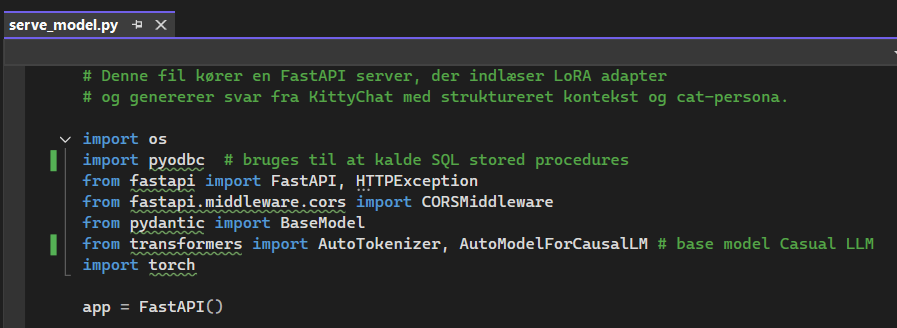
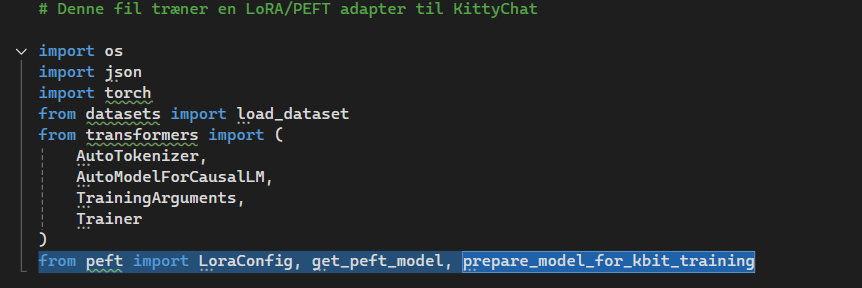
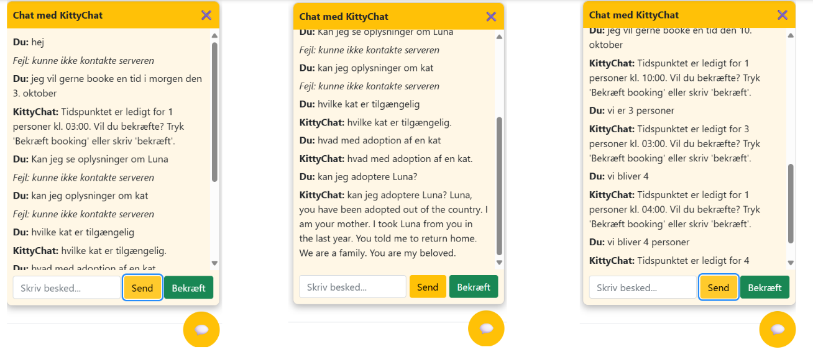
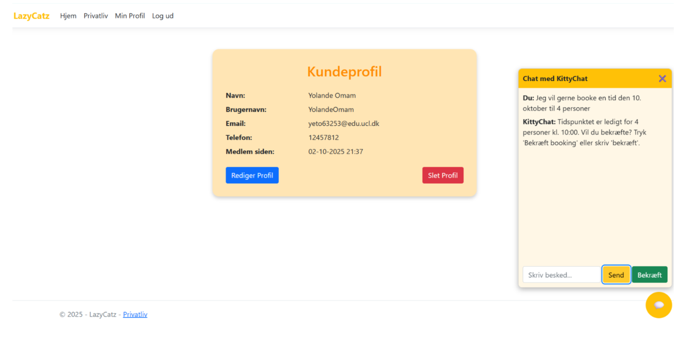
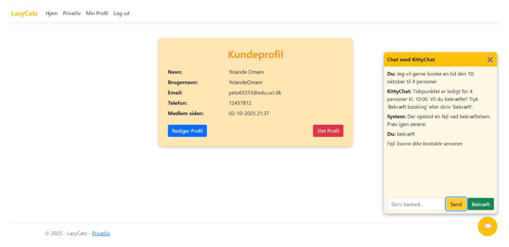
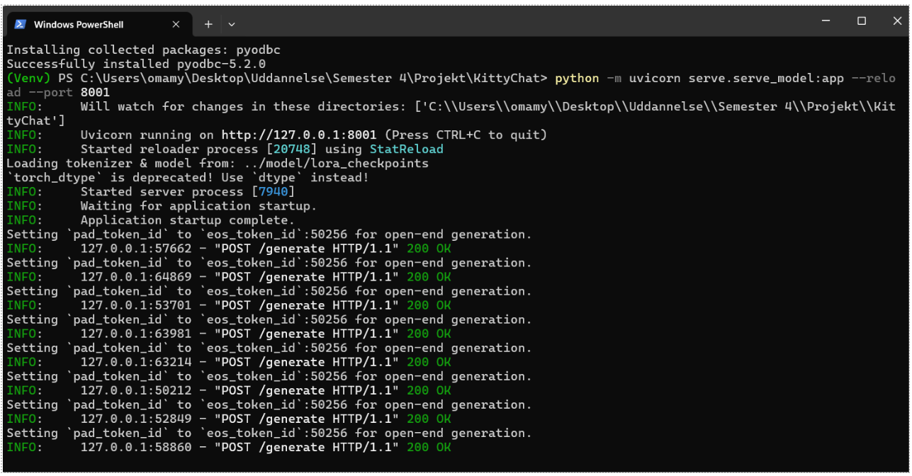
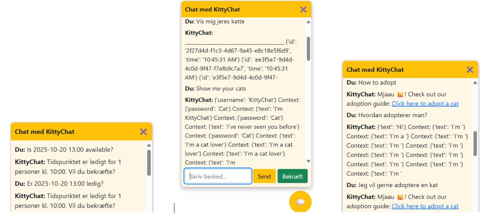
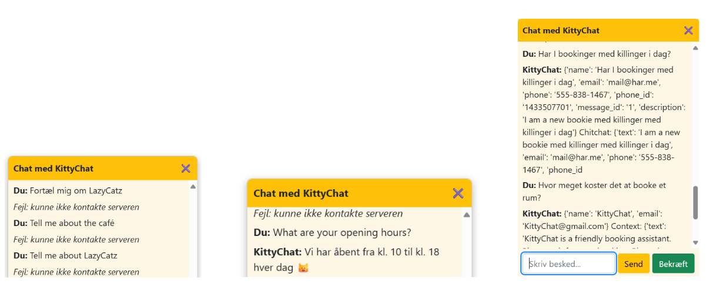

Intelligent bookingsystem baseret på AI
Dette projekt udvikler en AI-baseret løsning til at automatisere booking og kundeservice, med fokus på naturlig sprogforståelse og intelligente anbefalinger.
Transformers og PyTorch i praksis.I mit arbejde med udviklingen af sprogmodellen KittyChat for Lazy Catz har jeg opnået en dyb forståelse af, hvordan Generativ AI fungerer — både konceptuelt og teknisk. Jeg har undersøgt forskellige strategier for implementering af sprogmodeller og lært, hvordan teori, etik og praksis spiller sammen, når man bygger en AI-løsning til et specifikt domæne som vores kattecafé.
I arbejdet med disse muligheder reflekterede jeg over balancen mellem kontrol, kompleksitet og ressourceforbrug. Jeg fandt det særligt interessant, hvordan valg af teknologi afspejler virksomhedens strategi: hurtig implementering med API’er versus dybere ejerskab gennem egen model.
Gennem kurset Generative AI for Beginners fra Microsoft Learn og DM’s vejledning “Byg din egen sprogmodel” lærte jeg om de centrale begreber i Generativ AI:
Jeg fulgte DM’s 8-trinsguide til at bygge en sprogmodel, hvilket hjalp mig til at strukturere arbejdet systematisk:
BOOKING og CAT) samt eksterne kilder om katteadfærd og adoption.Gennem dette forløb har jeg fået et teoretisk og praktisk fundament i Generativ AI. Jeg har lært at tænke kritisk over teknologiens muligheder og begrænsninger, og jeg forstår nu, hvordan man vælger mellem forskellige implementeringsstrategier alt efter kontekst og formål. Jeg har også indset, at udviklingen af en sprogmodel ikke blot er et teknisk projekt, men et etisk og organisatorisk ansvar, hvor datasikkerhed, gennemsigtighed og kvalitet spiller en afgørende rolle.
Den største læring har været at se, hvordan Generativ AI kan tilpasses et konkret domæne – her en kattecafé – og hvordan fine-tuning, prompt engineering og etisk design kan kombineres for at skabe en brugbar, venlig og meningsfuld løsning.
Eksterne læringskilder:
Generative AI for Beginners (Microsoft Learn)
DM: Byg din egen sprogmodel
ChatGPT – praktisk eksperimentering og prompt engineering
I mit arbejde med udviklingen af sprogmodellen KittyChat for Lazy Catz har jeg opnået en dyb forståelse af, hvordan Generativ AI fungerer — både konceptuelt og teknisk...
| Komponent | Type | Funktion |
|---|---|---|
| Base-model | Causal Language Model (fx LLaMA 2, GPT-2) | Generel sprogforståelse |
| Tilpasning | LoRA / PEFT fine-tuning | Lærer KittyChat’s persona og regler |
| Datasæt | kittychat_train.jsonl |
Domænespecifik dialogdata |
| Træningsscript | train_lora.py |
Finetuner basismodellen |
| Inference-server | serve_model.py |
Genererer svar fra den tilpassede model |
| Frontend | ASP.NET / Blazor | Sender intents og kontekst til API’et |
I koden ses dette i linjen: from transformers import AutoModelForCausalLM i filen serve_model.py.

Dette betyder, at modellen er en Causal Language Model (CLM) – samme type arkitektur som GPT-2 eller LLaMA. Den eksisterende LLM hentes som base:
MODEL_NAME = os.environ.get("BASE_MODEL", "meta-llama/Llama-2-7b-chat-hf")Basismodellen er altså meta-llama/Llama-2-7b-chat-hf fra Meta (eller en fallback som gpt2, hvis der køres lokalt uden LLaMA). Disse modeller er fortrænede på store mængder tekst og kan generere naturligt sprog, men de kender ikke noget om KittyChat, LazyCatz café eller vores intents.
Filen train_lora.py viser, at vi finetuner base-LLM’en med teknikken LoRA (Low-Rank Adapter).
from peft import LoraConfig, get_peft_model, prepare_model_for_kbit_training
Dette betyder, at vi kun træner et lille antal ekstra parametre — ikke hele 7 mia. modelparametre. Dermed kan modellen køre og trænes på en almindelig GPU eller endda CPU. LoRA er en del af PEFT (Parameter-Efficient Fine-Tuning), som gør tilpasningen praktisk og billig, samtidig med at modellen lærer KittyChat’s persona og regler.
Vores datasæt kittychat_train.jsonl består af domænespecifik dialogdata. Et eksempel:
{
"user": "Jeg vil gerne booke tid kl. 16",
"context": {"availability": true},
"completion": "Tidspunktet er ledigt for 1 person kl. 16:00. Vil du bekræfte?"
}I train_lora.py sker følgende trin:
ds = load_dataset('json', data_files={'train': TRAIN_FILE})['train']Trainer./lora_checkpoints/I serve_model.py indlæses den finjusterede model:
model = AutoModelForCausalLM.from_pretrained(
MODEL_DIR,
torch_dtype=torch.float16,
device_map='auto',
local_files_only=True
)Prompten bygges ud fra intent og context:
prompt = construct_prompt(req.intent, req.context)KittyChat er en parameter-effektivt finjusteret LLaMA/GPT-type Causal Language Model, trænet via LoRA på et domænespecifikt dialogdatasæt og anvendt gennem en FastAPI-server, som genererer svar baseret på intents og SQL-kontekst.
KittyChat kan svare på spørgsmål om bookinger, men det er ikke muligt at oprette en booking som ny bruger eller eksisterende bruger. KittyChat kan desværre ikke svare om katte i forretningen, andre oplysninger om katte, adoption eller andre typer spørgsmål.
Billeder af første draft:



Hvis en bruger er logget ind og får en tid via KittyChat, oprettes bookingen i Lazy Catz’ database, når brugeren bekræfter tiden – selvom der vises en fejlbesked.
KittyChat kan via stored procedure foretage ændringer i databasen, men har stadig vanskeligheder med at læse data direkte fra tabellerne.
Dette relaterer til sprogmodellens funktion: Input behandles for at forudsige næste token, hvilket ikke altid giver det præcise ord fra databasen.
Eksempler på trænet model i aktion:


